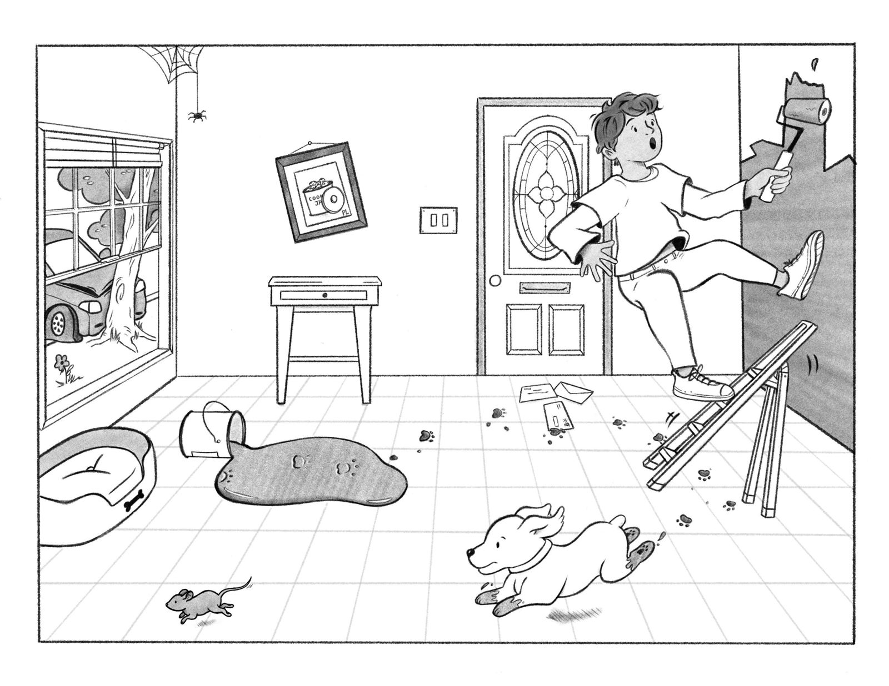
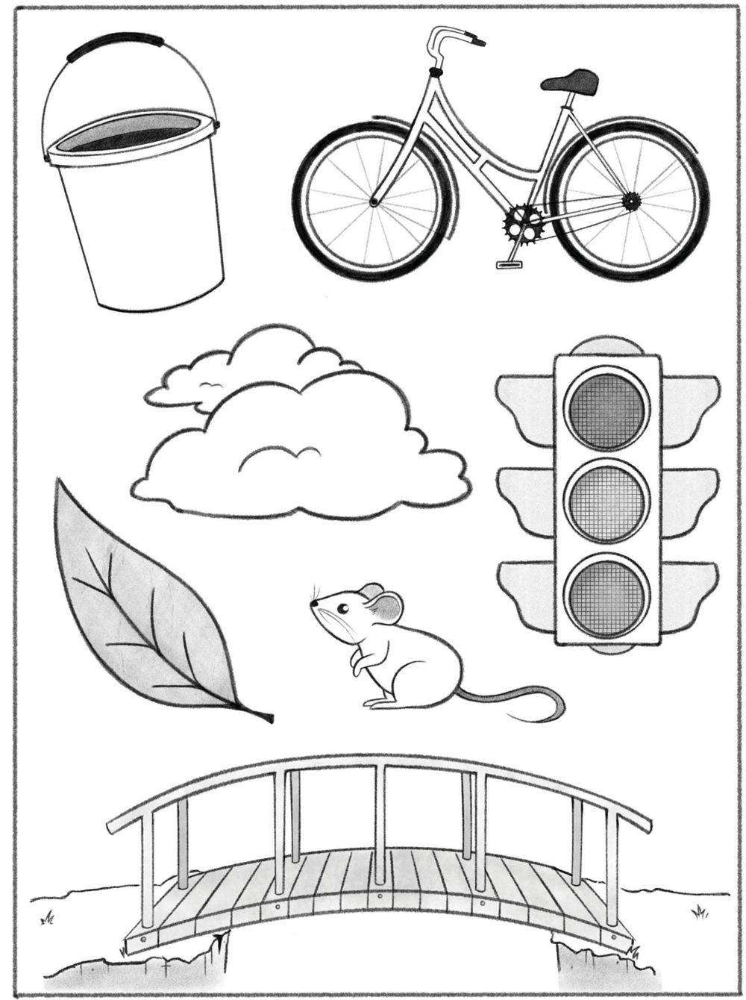

ITEM 9 · MELHOR LINGUAGEM · DESCRIÇÃO
Conte o que está acontecendo nesta figura.

Figura oficial da NIH Stroke Scale, atualizada em 2024 (NINDS/NIH) · © Apex Innovations
ITEM 9 · MELHOR LINGUAGEM · NOMEAÇÃO
Diga o nome de cada figura.

Folha de nomeação oficial da NIH Stroke Scale, atualizada em 2024 (NINDS/NIH) · © Apex Innovations 2023
ITEM 9 · MELHOR LINGUAGEM · LEITURA
Leia em voz alta.
Você sabe como fazer.
De volta pra casa.
Eu cheguei em casa do trabalho.
Próximo da mesa, na sala de jantar.
Eles ouviram o Pelé falar no rádio.
ITEM 10 · DISARTRIA
Leia ou repita estas palavras.
MAMÃE
TIC-TAC
PARALELO
OBRIGADO
ESTRADA DE FERRO
JOGADOR DE FUTEBOL
Frases e palavras da versão brasileira da NIHSS — tradução e adaptação: Octávio Marques Pontes-Neto (Neurologia, HCFMRP-USP).